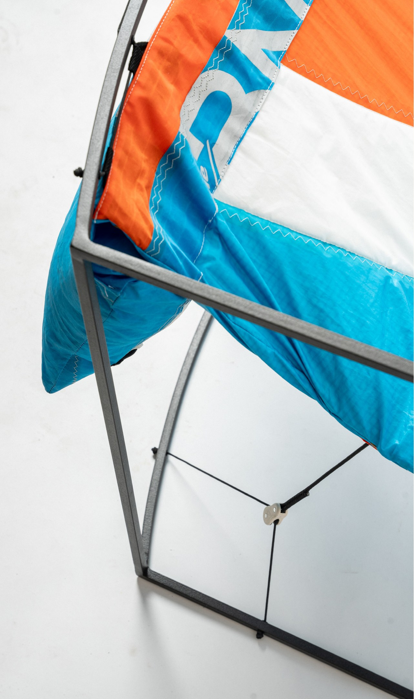
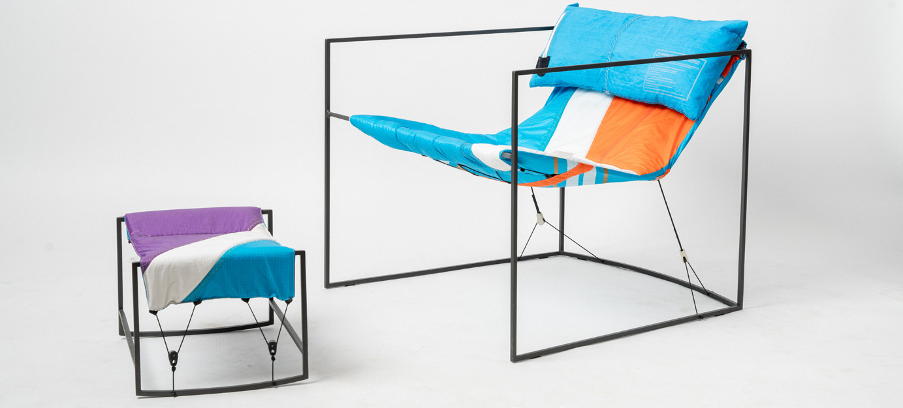
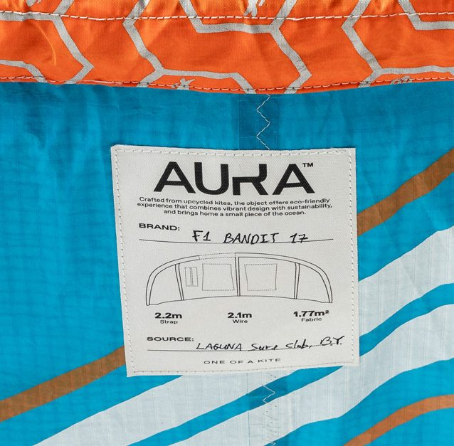
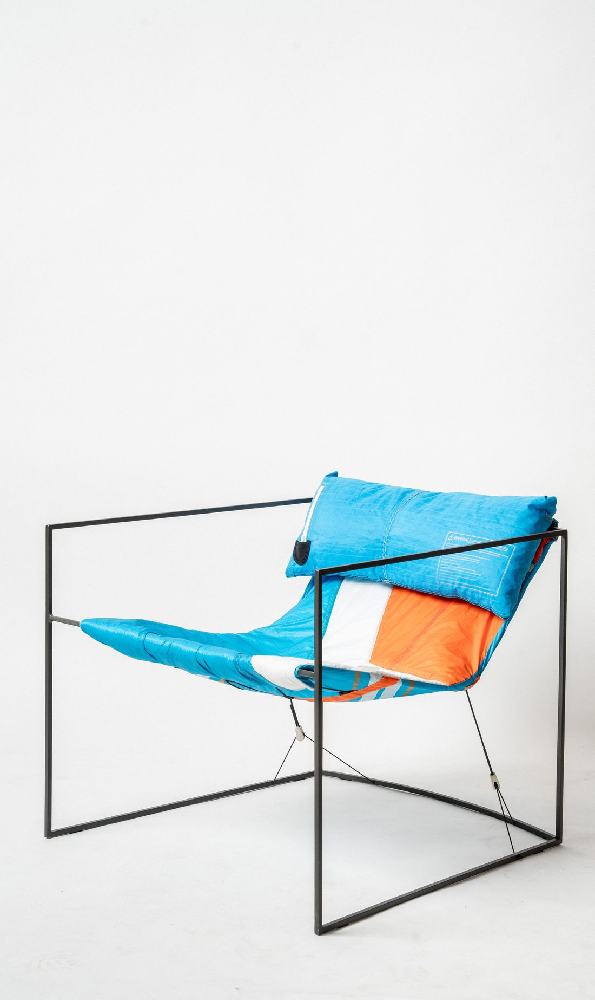
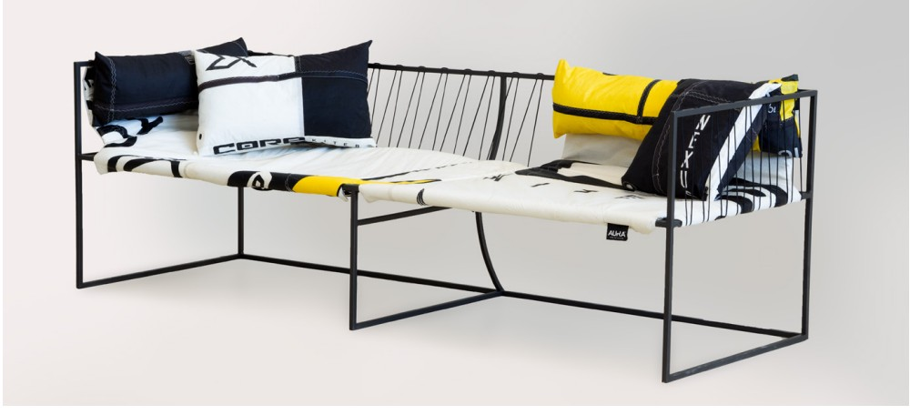
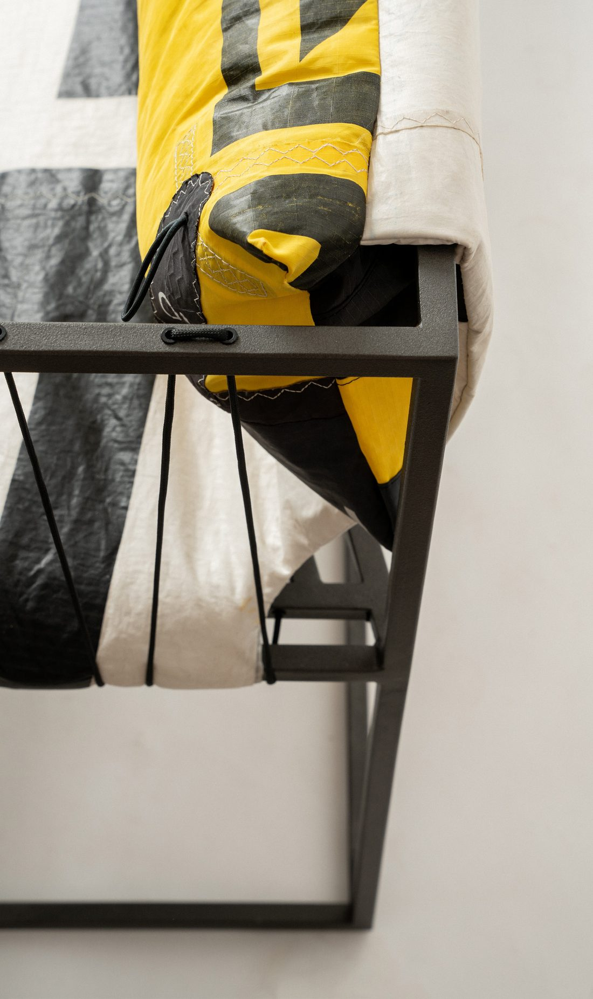
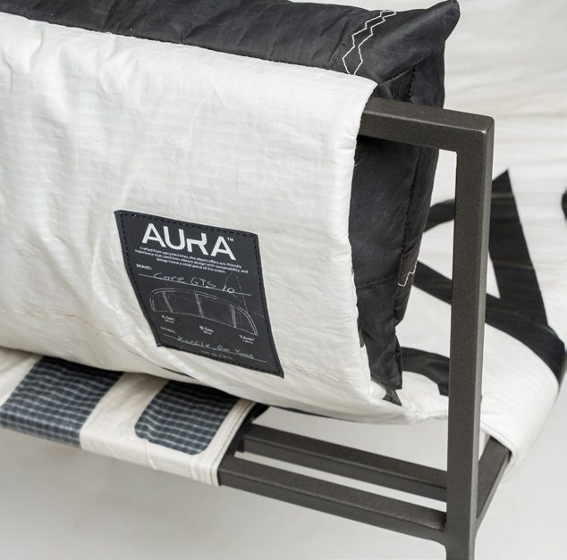

01. AURA | One of A Kite
In kitesurfing, the conditions at sea and constant technological advancements lead to a high turnover of equipment and textile waste of unique size, material, and graphics.
Aura gives the discarded kites a second life as furniture, using it for upholstery as well as inner wires and filling. Each item is one of a kind, has a unique individual look thanks to the varying patterns of the original material, and sports a label indicating it is an upcycled item.
The project sets out to produce quality products from “waste”, that can be presented proudly in our homes.
Materials: Upcycled kitesurfing kites, steel frame.





